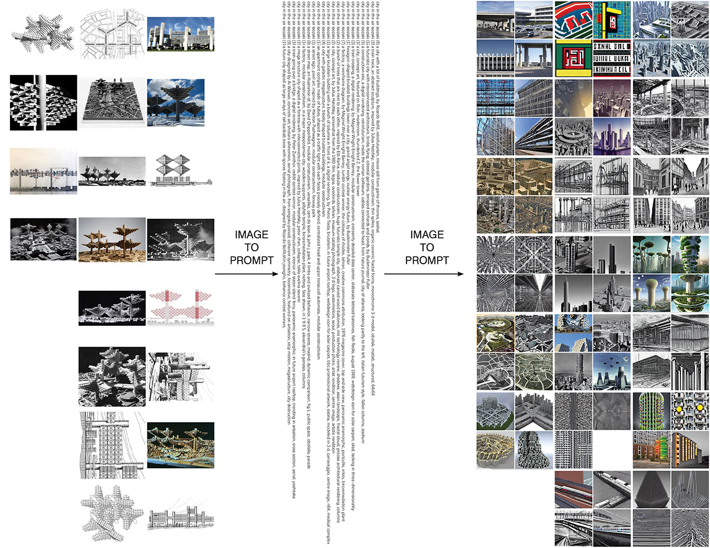
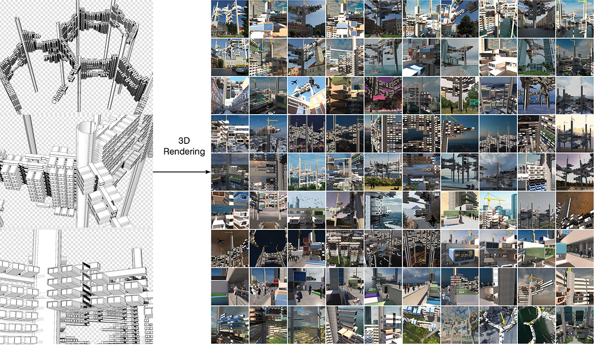
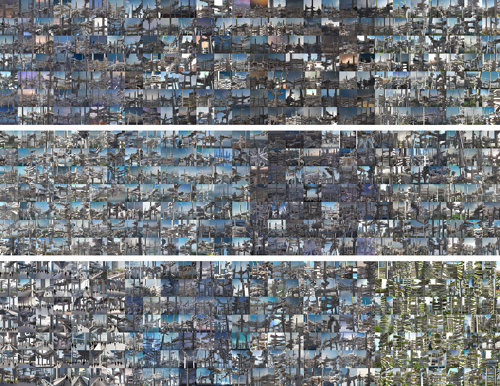
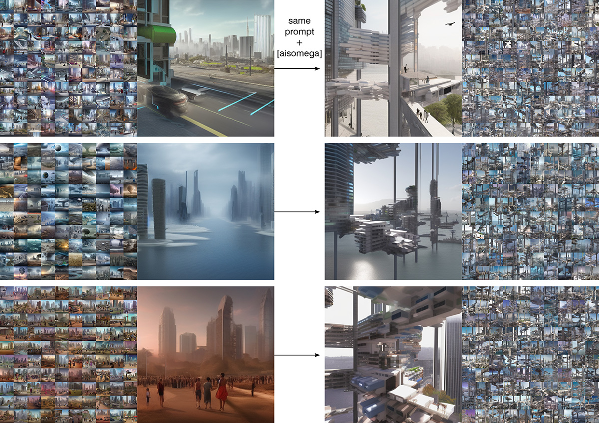
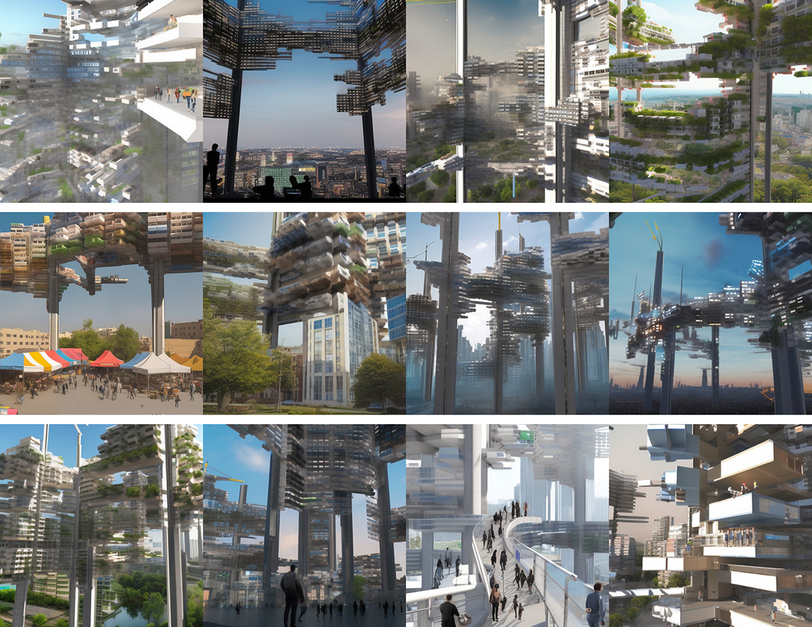

CITY IN THE AIR?
When feeding historical images of megastructure concepts to Stable Diffusion/ CLIP Interrogator for img2img generation and reverse prompt engineering, I find Arata Isozaki's 1962 project City in the Air being the most (architecturally) readable design for conecpt embedding.
 SD's architectural imagination based on (the only few available) historical images of City in the Air. Inception: 3D modeling of megastructure concept to produce 90 renderings as a training set for DreamBooth Fine-tunning.
 Inception working: The trained model enables Stable Diffusion to reimagine megastructure as an integral part of various concepts.
As an intermediate result of AI model fine-tuning with Google’s DreamBooth technique, my personalized Stable Diffusion model generates alternative images of contemporary and future cities intervened by megastructure concepts with technical limitations. In addition to bridging the latest AI technologies with architectural discourse, the project demonstrates the cultural capacity of architecture as a visual carrier of thought instruments to break through the cultural stagnation of contemporary imagination for alternative futures.
 Intermediate results of Stable Diffusion training compared to my initial exercise using the same prompt + megastructure inception. Experimentation to be continued with more comprehensive training sets and upcoming AI tools...